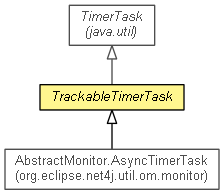

org.eclipse.net4j.util.concurrent
Class TrackableTimerTask
java.lang.Object
 java.util.TimerTask
org.eclipse.net4j.util.concurrent.TrackableTimerTask
java.util.TimerTask
org.eclipse.net4j.util.concurrent.TrackableTimerTask
- All Implemented Interfaces:
- Runnable
- Direct Known Subclasses:
- AbstractMonitor.AsyncTimerTask
- public abstract class TrackableTimerTask
- extends TimerTask

- Since:
- 3.3
|
Field Summary |
static boolean |
TRACK_TIMER_TASKS
The boolean value of the system property org.eclipse.net4j.util.concurrent.TrackTimerTasks. |
| Methods inherited from class java.lang.Object |
clone, equals, finalize, getClass, hashCode, notify, notifyAll, toString, wait, wait, wait |
TRACK_TIMER_TASKS
public static final boolean TRACK_TIMER_TASKS
- The boolean value of the system property
org.eclipse.net4j.util.concurrent.TrackTimerTasks.
TrackableTimerTask
protected TrackableTimerTask()
cancel
public boolean cancel()
- Overrides:
cancel in class TimerTask
getConstructionStackTraces
public static Collection<Exception> getConstructionStackTraces(long minLifeTimeMillis)
logConstructionStackTraces
public static void logConstructionStackTraces(long minLifeTimeMillis)
Copyright (c) 2011, 2012 Eike Stepper (Berlin, Germany) and others.